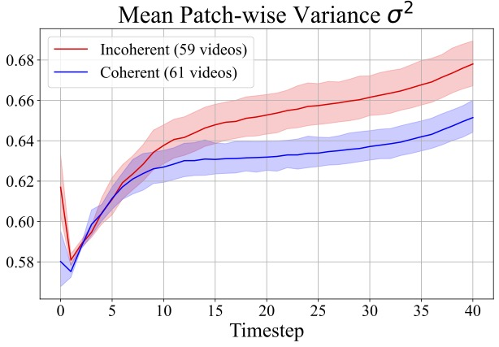

Text-to-video diffusion models are notoriously limited in their ability to model temporal
aspects such as motion, physics, and dynamic interactions. Existing approaches address this
limitation by retraining the model or introducing external conditioning signals to enforce
temporal consistency. In this work, we explore whether a meaningful temporal representation can
be extracted directly from the predictions of a pre-trained model without any additional
training or auxiliary inputs. We introduce FlowMo, a novel training-free
guidance method that enhances motion coherence using only the model's own predictions in each
diffusion step.
FlowMo first derives an appearance-debiased temporal representation by measuring the distance
between latents corresponding to consecutive frames. This highlights the implicit temporal
structure predicted by the model.
It then estimates motion coherence by measuring the patch-wise variance across the temporal
dimension, and guides the model to reduce this variance dynamically during sampling. Extensive
experiments across multiple text-to-video models demonstrate that FlowMo significantly improves
motion coherence without sacrificing visual quality or prompt alignment, offering an effective
plug-and-play solution for enhancing the temporal fidelity of pre-trained video diffusion
models.
Qualitative Comparison: FlowMo vs. Base Models
As mentioned in the paper, FlowMo is a novel training-free guidance method that enhances motion
coherence. In this section, we provide an
apples-to-apples qualitative comparison showing the impact of FlowMo on the base model
(Wan2.1-1.3B, CogVideoX-5B). The comparisons are conducted with the same random seed on diverse prompts
that capture a variety of motion types.
Use the arrows to navigate through the results.
Wan2.1-1.3B
A boy with glasses flying a kite in a grassy field.
A woman performing a challenging exercise.
A dolphin jumping out of ocean waves.
A ninja flipping through a bamboo fores.
A person rowing a boat across a misty lake.
A roulette wheel in a dimly lit room or casino floor.
A senior couple dancing at sunset on a pier.
A woman in a flowing dress dancing in a field.
A child jumping on a trampoline.
A helicopter flying over a forest.
Pikachu with Charmander at a campfire.
A painter creating a landscape on canvas.
CogVideoX-5B
A violinist performing a solo on stage.
A pair of flamingos wading through shallow wate.
A ballerina leaping through the air.
A deer leaping over a fallen log.
A potter shaping clay on a spinning wheel.
A teenager skateboarding down a handrail.
A falcon swooping down.
A golfer following through on a perfect swing.
A bee collecting pollen from a vibrant flower.
A chef flipping vegetables in a wok with dramatic flames.
Qualitative Comparison: FlowMo vs. FreeInit
As mentioned in the paper, we compare FlowMo with FreeInit, a method originally
designed for UNet-based DDPM/DDIM models that suffer from temporal artifacts due to signal-to-noise
ratio (SNR) discrepancies between training and inference. These artifacts often result in
inconsistencies across frames (e.g., identity or background shifts).
In contrast, FlowMo operates on modern Transformer-based models trained with Flow Matching (FM), which
offer greater temporal consistency due to stronger architectures and training on large-scale data. For a
fair comparison, we adapted FreeInit to FM-based DiT models by applying its re-noising strategy to
initialize low-frequency components.
Use the arrows to navigate through the results.
Athletic man doing gymnastics on a horizontal bar.
Young adult male doing a handstand on the beach.
A small dog playing with a red ball on a hardwood floor.
A man jumping rope on a dark stage.
A young woman doing stretches on the beach.
A close-up of a person's feet as they walk through flowers.
A person lifts one knee high in a marching motion.
A young woman practicing boxing in a gym.
A female kayaker paddling through white water rapids.
An origami bird transforming into a real dove and taking flight.
Motivation for FlowMo
FlowMo arose from the observation that videos with coherent and incoherent motion exhibit separation in
a measure we defined as Patch-Wise Variance. Given a tensor, we first compute the
ℓ1-distance between consecutive latent frames to eliminate their common appearance
information and get a debiased motion representation. We then compute patch-wise temporal variance, and
finally take its mean value across channels.
Patch-Wise Variance of a Latent Video
After examining the patch-wise variance of the model's prediction when generating videos with coherent
and incoherent motion, we found that the model's predictions for coherent motion consistently exhibited
lower patch-wise variance compared to those for incoherent motion, as seen in the figure below.
Intuitively, in videos with smooth and consistent motion, object trajectories evolve gradually,
resulting in lower temporal variance. In contrast, incoherent motion introduces abrupt changes,
manifesting as larger fluctuations and higher patch-wise variance in the latent predictions.

Patch-Wise Variance of a Latent Video
We have therefore proposed to use this measure to guide the model to reduce the patch-wise variance
during sampling, thus encouraging it to produce a prediction which is more likely to demonstrate
coherent motion. After each timestep of the first 12 timesteps, FlowMo minimizes the
maximum patch-wise variance of the model's prediction, which results in an adjusted latent for the next
timestep. We chose the first 12 timesteps because we found that coarse spatial information is determined
in the first steps (0-4) and motion is determined at around steps 5-8 (and refined later), as seen in
the figures below.
BibTeX
If you find this project useful for your research, please cite the following:
@article{flowmo2024,
title={FlowMo: Variance-Based Flow Guidance for Coherent Motion in Video Generation},
author={Shaulov, Ariel and Hazan, Itay and Wolf, Lior and Chefer, Hila},
journal={arXiv preprint arXiv:XXXX.XXXXX},
year={2024}
}